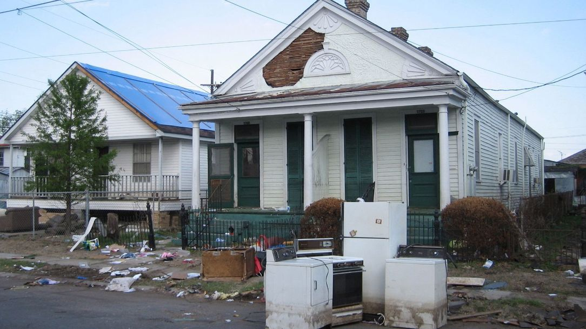

Storm surge in the ground floor again, a leak found between guests at your rental, or a condo ceiling dripping from the unit above? Water damage on Fort Myers Beach comes from every direction: the Gulf, the back bay, the rain and the plumbing inside. Since Hurricane Ian, much of Estero Island has been rebuilt or raised, and the rules have changed with it.
Call 239-356-3708 answered 24/7
24/7 Emergency Water Damage Help on Fort Myers Beach
- Storm surge is the island's biggest water risk; floodwater is Category 3 and needs removal, not just drying.
- Vacation rentals and seasonal homes often sit empty, so leaks can run unnoticed between guests.
- Condo buildings mean leaks can travel between units and involve the association.
Water damage on Fort Myers Beach right now? Do this first
- After a storm, wait for the all-clear from the Town of Fort Myers Beach or Lee County before returning.
- Keep the power off if water reached outlets or the panel, until an electrician checks it.
- Shut off the water at the fixture or main.
- Photograph and video everything before cleanup, including the water line on walls.
- Rental owners: tell your property manager and the next guests if the unit isn't usable.
- Start drying the same day. Mold can start within 24 to 48 hours in Florida humidity.
Every step in one list: the first-hour water damage checklist.
What makes water damage different on Fort Myers Beach
Storm surge. Hurricane Ian in 2022 pushed catastrophic surge across Estero Island, and Hurricanes Helene and Milton in 2024 brought more. Surge is saltwater mixed with sewage, sand and debris, so everything it touches porous usually has to go. See flood and storm cleanup.
Elevated rebuilds. Many homes and businesses have been rebuilt or raised with living space above ground-level parking, storage or entry areas. Flood coverage for those lower enclosures is often limited, so check your policy.
Vacation rentals. Much of the island is short-term rentals. Leaks from AC drains, water heaters, toilets and washers can sit between bookings.
Condos. Mid-rise and high-rise condo buildings mean a leak can travel from one unit to several below. See condo water damage.
Salt air. Corrosion from salt air wears on fittings, water heaters and AC components faster than inland.
The water damage problems we see most on Fort Myers Beach
| Problem | Why it's common on the island | Read more |
|---|---|---|
| Storm surge flooding | Low barrier island between the Gulf and the back bay | Flood and storm cleanup |
| Sewage after storms | Surge and power outages affecting sewer systems | Sewage backup cleanup |
| Leaks in vacation rentals | Empty units between guests | Water damage in vacant homes |
| Condo leaks from above | Stacked units in condo buildings | Condo water damage |
| AC condensate leaks | Air handlers running hard in salt air | AC leak water damage |
| Roof and window leaks | Wind-driven rain in storms | Ceiling leak help |
Fort Myers Beach ZIP code
Fort Myers Beach is ZIP code 33931, covering Estero Island from the north end near the Matanzas Pass Bridge to the south end near Big Carlos Pass.
Rebuilding and the 50% rule
After major storms, owners in flood zones often run into FEMA's substantial damage rule, commonly called the 50% rule. If repairs to a home in a flood zone cost 50% or more of the building's market value, the building usually has to be brought up to current flood rules, often meaning elevation. The Town of Fort Myers Beach handles those determinations. Keep detailed records of damage and repair costs, and talk to the town's building department before starting major repairs.
Vacation rental water damage
A leak between guests can mean canceled bookings. For rental owners and managers:
- Ask your manager or cleaner to check for water, smells and AC problems at every turnover.
- Keep the AC on and set reasonably between bookings to control humidity.
- Install leak alarms or automatic shut-off valves where practical.
- Document everything before cleanup if you need to file a claim.
How water damage restoration works on Fort Myers Beach
- Make it safe. Power, gas and structure are checked after storms.
- Extract standing water with emergency water removal equipment.
- Remove contaminated materials after surge or sewage: drywall below the flood cut, insulation, carpet and particle board.
- Clean and disinfect remaining surfaces.
- Dry the structure with dehumidifiers and air movers, logging readings daily. See how structural drying works.
- Repair once everything reads dry.
Water damage costs on Fort Myers Beach
These are national 2026 ranges.
| Work | Typical 2026 range |
|---|---|
| Emergency water extraction | $500 to $2,000 |
| Category 1 extraction and drying | $3 to $4 per sq ft |
| Category 3 (sewage or floodwater) | $7 to $7.50+ per sq ft |
| Heavy contamination | About $7 to $16 per sq ft |
| Drying equipment, whole job | $800 to $3,000 |
After a major storm, demand across the island and county can stretch crews and equipment. These are national ranges, not a quote. See the full water damage cost guide.
Insurance for Fort Myers Beach water damage
- Storm surge and rising water need a flood policy.
- Wind-driven rain through a damaged roof or window is usually a homeowners or wind claim.
- Lower enclosures in elevated homes often have limited flood coverage.
- Condos: the association's master policy and your HO-6 split the costs.
- Rentals: check whether your policy covers short-term rental use and loss of rental income.
Condos and multi-unit buildings on the island
Fort Myers Beach condo buildings range from older low-rise buildings to newer mid-rise towers. In any of them, water from one unit's water heater, AC drain or washer can travel through floors and walls into units below and beside it. Florida Statute 718.111(11) and your condo documents generally decide who's responsible for which repairs. Report leaks to management right away, and photograph your unit before anything is removed. See condo water damage.
After a storm: getting back on the island
- Follow official re-entry rules from the Town of Fort Myers Beach and Lee County.
- Bring supplies: boots, gloves, N95 masks, a flashlight and a phone charger.
- Don't turn the power on until an electrician says the panel and wiring are safe.
- Photograph everything first, including the water line, before mucking out.
- Keep receipts for supplies, hotels and emergency work.
- Call early. After a major storm, demand across the island and county is high.
Ground-level enclosures in elevated homes
Many rebuilt and elevated island homes have ground-level enclosures for parking, storage and entry. These areas are designed to flood, and flood insurance coverage for finishes and contents there is often limited. Keep valuables, electronics and appliances out of these spaces when possible, and know what your flood policy covers below the lowest elevated floor.
Fort Myers Beach water damage through the year
| Season | What we see most |
|---|---|
| June to November | Hurricane season: surge, wind-driven rain, sewage after storms |
| Summer | AC drain clogs and humidity problems in empty rentals |
| Winter season | Leaks discovered in condos and rentals during busy months |
| All year | Water heaters, toilets, washers and corroded fittings in salt air |
Questions about water damage on Fort Myers Beach
Is there 24-hour water damage help on Fort Myers Beach?
Yes. Call 239-356-3708, answered 24/7, for water damage anywhere on Fort Myers Beach.
Is storm surge covered by homeowners insurance?
No. Storm surge is flood damage, covered by a flood policy. Wind damage is usually a homeowners or wind claim.
What is the 50% rule on Fort Myers Beach?
If repairs to a damaged home in a flood zone reach 50% or more of its market value, it usually has to meet current flood rules, often meaning elevation. The town makes that determination.
My rental guests found water in the unit. What now?
Shut off the water, move guests if the unit isn't safe or usable, photograph everything and call. Let your manager and insurer know.
Is surge water dangerous?
Yes. Surge water is Category 3 and can carry sewage, chemicals and debris. Wear boots, gloves and a mask, and keep children out.
Do you cover Sanibel and Estero too?
Yes. See water damage restoration in Estero and all service areas.
How do I protect my rental from leaks between guests?
Have the cleaner check under sinks, around the water heater and the AC closet at each turnover, keep the AC running, and consider leak alarms or an automatic shut-off valve.
Can I go back to the island right after a hurricane?
Only after officials allow re-entry. Even then, keep the power off until an electrician checks it, and wear protective gear around floodwater.
Water damage on Fort Myers Beach?
Make it safe, take photos and call. The faster wet materials come out and drying starts, the less you'll rebuild.
Call 239-356-3708 answered 24/7